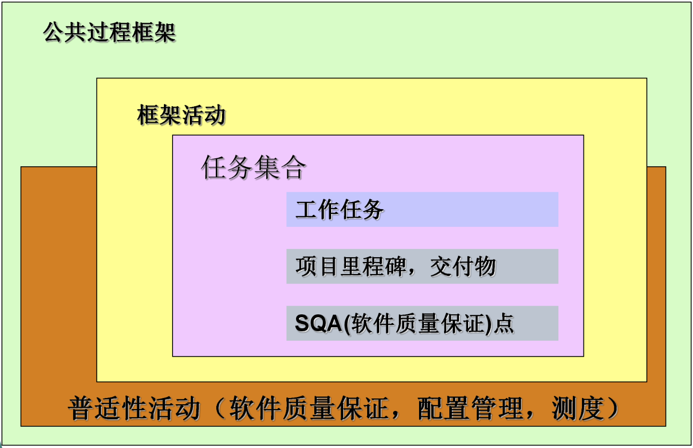

软件工程 1 复习题
1 什么是软件？
- 软件是能够完成预定功能和性能，并对相应数据进行加工的程序和描述程序及其操作的文档
- 软件 = 程序（指令的集合）+ 数据（数据结构）+ 文档（软件描述信息）
2 软件的特点有哪些？
- 软件是设计开发的，而不是传统意义上生产制造的
- 软件不会“磨损”
- 虽然整个工业向着基于构件的构造模式发展，然而大多数软件仍是根据实际的顾客需求制定的
3 举出5个软件应用领域
- 系统软件
- 应用软件
- 工程 / 科学软件
- 嵌入式软件
- 产品线软件
- Web 应用软件
- 移动应用软件（app）
- 人工智能软件（包括机器人、人工神经网络和博弈等）
4 造成软件危机的原因有哪些？
- 软件产品本身的需求和特征
- 软件规模大、复杂性高、性能不断增强
- 软件是逻辑产品，完全认识其本质和特点极其困难
- 工程管理技术缺乏
- 缺乏有效的、系统的开发、维护大型软件项目的技术手段和管理方法
- 沟通和理解
- 用户对软件需求的描述和软件开发人员对需求的理解往往存在差异，用户经常要求修改需求，开发人员很难适应
- 人员和技术
- 软件开发的技术人员和管理人员缺乏软件工程化的素质和要求，对工程化的开发认识不足
- 软件产品本身的需求和特征
5 软件工程目标和原则是什么？
- 目标（TQCS）：在给定成本（Cost）、进度（Time）的前提下，开发出满足用户需求（Service）的高质量（Quality：有效性、可靠性、可适应性、可追踪性、移植性、可互操作性、可修改性）的软件产品
- 原则：抽象、模块化、信息隐藏、局部化、一致性、完全性、可验证性
6 软件工程[IEEE93]的定义？
- 将系统的、规范的、可度量的方法应用于软件的开发、运行和维护的过程
7 软件工程的三要素，并详细解释。
- 三要素：过程、方法、工具
- 过程：贯穿软件开发的各个环节
- 过程和方法：管理者在软件工程过程中通过适当的方法对软件开发的质量、进度、成本进行评估、管理和控制
- 方法及工具：技术人员采用相应的方法和工具生成软件工程产品（模型、文档、数据、报告、表格等）
8 简述软件工程过程框架
- 框架活动：
- 沟通
- 策划
- 建模
- 需求分析
- 设计
- 构建
- 编码
- 测试
- 部署
- 工作任务、工作产品、里程碑 & 可交付成果、QA 检查点
- 普适性活动：
- 软件项目跟踪和控制
- 风险管理
- 软件质量保证
- 技术评审
- 测量
- 软件配置管理
- 可复用管理
- 工作产品的准备和生产
- 框架活动：
9 软件工程实践的五个步骤
- 实践的精髓：理解问题（沟通和分析）、计划解决方案（建模和软件设计）、实施计划（代码生成）、检查结果的正确性（测试和质量保证）
- 理解问题：
- 谁将从问题的解决中获益？
- 有哪些是未知的？
- 问题可以划分吗？
- 问题可以图形化描述吗？
- 计划解决方案：
- 以前曾经见过类似问题吗？
- 类似问题是否解决过？
- 可以定义子问题吗？
- 能用一种可以很快实现的方式来描述解决方案吗？
- 实施计划：
- 解决方案和计划一致吗？
- 解决方案的每个组成部分是否可以证明正确？
- 检查结果：
- 能够测试解决方案的每个部分？
- 解决方案是否产生了与所需求的数据、功能和特征一致的结果？
10 软件工程实践的通用规则——Hooker的概括性原则（过程的基本考虑和出发点
- 存在价值
- KISS（保持简洁）
- 保持愿景
- 关注使用者
- 面向未来
- 计划复用
- 认真思考
11 通用软件过程模型的层次活动

{kind=link}
12 CMM 的能力成熟度级别及关键过程域
- 软件能力成熟度模型 Capability Maturity Model for Software（CMM）
- 级别：关键过程域
- L1 初始级：无序工作状态，无系统的规范
- L2 可重复级：需求管理、软件项目计划、项目跟踪和监督、分包合同管理、软件质量保证、软件配置管理
- L3 已定义级：组织的过程焦点、组织的过程定义、培训大纲、集成化软件管理、软件产品工程、组间协调、同行评审
- L4 已管理级：定量的过程管理、软件质量管理
- L5 优化级：缺陷的预防、技术更新管理、过程变更管理
- 关键过程域（key process area）：描述软件过程的属性，通过完成一组相互关联的活动，实现一组对建立过程能力至关重要的目标
- 组织的成熟度级别越高，软件开发能力越强、产品质量越好、效率越高、成本越低。
13 能力成熟度模型集成 CMMI
- CMMI-SE/SW/IPPD v1.0 主要参考模型：
- 软件学科的 SW-CMM
- 集成化产品和过程开发领域的 IPD CMM v0.98
- CMMI 的继承原则：
- 阶段式表示法
- 连续式表示法
- 软件学科的两种表示法均采用统一的 24 个过程域，它们在逻辑上是等价的
- CMMI-SE/SW/IPPD v1.0 主要参考模型：
14 阶段式 CMMI 模型
- 阶段式模型基本沿袭 SW-CMM 模型框架，仍保持五个“成熟度等级”，但过程域做了一些调整和补充
- 成熟度等级：24 个过程域
- L2 可重复级：需求管理、项目计划、配置管理、项目监督和控制、供应商合同管理、度量和分析、过程和产品质量保证
- L3 已定义级：需求开发、技术解决方案、产品集成、验证、确认、组织级过程焦点、组织级过程定义、组织级培训、集成化项目管理、风险管理、集成化的团队、决策分析和解决方案、组织级集成环境
- L4 已管理级：组织级过程性能、项目定量管理
- L5 优化级：组织级改革和实施、因果分析和解决方案
15 连续式 CMMI 模型
- 共同点、不同点（软件、软件过程、能力成熟度
- 连续式模型将 24 个过程域按照功能划分为：过程管理、项目管理、工程、支持四个过程组，进行连续评价
- 连续式分组：24 个过程域
- 过程管理：组织级过程焦点、组织级过程定义、组织级培训、组织级过程性能、组织级改革和实施
- 项目管理：项目计划、项目监督和控制、供应商合同管理、集成化项目管理、风险管理、集成化的团队、项目定量管理
- 工程：需求管理、需求开发、技术解决方案、产品集成、验证、确认
- 支持：配置管理、度量和分析、过程和产品质量保证、决策分析和解决方案、组织级集成环境、因果分析和解决方案
16 软件生存周期（旧：三时期七阶段，新：五时期十七阶段）
- 传统上分为三个时期、七个阶段：
- 软件定义：
- 问题定义：确定系统的总体目标
- 可行性分析：研究经济、技术、操作等的可行性
- 需求分析：收集需求，需求建模
- 软件开发：
- 系统设计：软件结构设计、数据设计、接口设计和过程设计
- 编码：产生源程序清单
- 测试：产生软件测试计划和软件测试报告
- 软件运行：
- 维护：修改、完善、扩展软件
- 软件定义：
- 三时期七阶段：可行性研究（1） → 需求分析（1） → 概要设计（2） → 详细设计（2） → 编码（2） → 组装和确认测试（2） → 维护（3）
- 传统上分为三个时期、七个阶段：
17 瀑布模型及其优缺点
- 传统瀑布模型：
- 软件开发过程与软件生命周期是一致的
- 相邻二阶段之间存在因果关系
- 需对阶段性产品进行评审
- 带反馈的瀑布模型：

- 优点：
- 软件生命周期模型，使软件开发过程可以在分析、设计、编码、测试和维护的框架下进行
- 软件开发过程具有系统性、可控性，克服了软件开发的随意性
- 缺点：
- 项目开始阶段用户很难精确地提出产品需求，由于技术进步，用户对系统深入的理解，修改需求十分普遍
- 项目开发晚期才能得到程序的运行版本，这时修改软件需求和开发中的错误代价很大
- 采用线性模型组织项目开发经常发生开发小组人员“堵塞状态”，特别是项目的开始和结束
- 新瀑布模型：
- 五时期十七阶段：沟通、项目启动、需求获取 → 策划、项目估算、进度计划、项目跟踪 → 建模、分析、设计 → 构建、编码、测试 → 部署、交付、支持、反馈
- 增加了项目策划
- 将设计和编码测试分开，并进一步细化各个阶段
- 软件生命周期由原来的三时期七阶段变为五时期十七个阶段
- 仍然保持原来的特点
- 瀑布模型是软件工程的基本过程模型，也是最重要的过程模型
- 传统瀑布模型：
18 V 模型及其含义
- V 模型——软件开发过程与测试的关系：

- V 模型——软件开发过程与测试的关系：
19 增量模型
- 增量：小而可用的软件
- 特点：
- 在前面增量的基础上开发后面的增量
- 每个增量的开发可用瀑布或快速原型模型
- 迭代的思路：

20 原型模型
- 原型模型支持软件需求开发，帮助用户和开发人员理解需求，是软件需求工程的关键
- 如果开发的原型是可运行的，它的若干高质量的程序片段和开发工具可用于工作程序的开发
- 原型的开发和评审是系统分析员和用户 / 客户共同参与的迭代过程，每个迭代循环都是线性过程
- 第一个原型通常会不好用，太大或者太慢
- 利益相关者意识不到原型临时性，不愿意抛弃，总希望小修改后使用，软件开发管理层大多数情况下会妥协
- 软件工程师为了快，会使用折中手段，会采用自己熟悉的语言、系统乃至低效的算法
- 图示：

21 螺旋模型
- 螺旋模型 = 瀑布模型（系统化）+ 原型（迭代）
- 螺旋模型适用于计算机软件整个生命周期
- 图示：

- 图示：

- 结构（软件过程的 Boehm 螺旋模型（@1998 IEEE））：

- 使用：软件工程项目从螺旋中心开始启动，沿顺时针方向前进
- 第一圈：产生产品规格说明
- 第二圈：产生一个用于开发的原型
- 第三圈：产生软件产品的初始版本
- 第四圈：产生软件产品比较完善的新版本
- 优点：
- 符合人们认识现实世界和软件开发的客观规律
- 支持软件整个生命周期
- 保持瀑布模型的系统性、阶段性
- 利用原型评估降低开发风险
- 开发者和用户共同参与软件开发，尽早发现软件中的错误
- 不断推出和完善软件版本，有助于需求变化，获取用户需求，加强对需求的理解
22 统一软件过程模型（活动、制程
- 其他专用过程模型：基于构件的开发模型、形式化方法模型、面向方面（Aspect Oriented）的软件开发模型、统一过程模型
- 统一过程（UP）模型：一种“用例驱动、以构架为中心的迭代和增量”软件过程和统一建模语言（UML）紧密结合
- 统一过程的阶段：

- UP 工作产物：

- Rational 统一软件过程（RUP）：

- RUP 软件生命周期：
- 先启：定义整个项目的范围
- 精化：制定项目计划、描述功能、建立体系架构框架
- 构建：构造软件产品
- 产品化：将软件产品移交到最终用户手中
- 软件过程的定义：
- 软件过程定义由谁在什么时候做什么事情，并且如何去达到一定的目标
- 新需求或需求变更 → 软件过程 → 新系统或系统变更
- 用 RUP 的四种主要建模元素（角色、活动、制品、工作流）来表达
- 所有的过程元素（角色、活动、制品等）被划分到不同的逻辑容器中，称为规程
- 统一过程的模型：
- 用例模型：用例与用户之间关系（交互时）
- 分析模型：系统的行为初步分配给一组对象
- 设计模型：系统静态结构定义为子系统、类、接口，并定义由子系统、类和接口之间的协作所实现的用例
- 实现模型：构件（表现为源代码）和类到构件的映射
- 实施模型：计算机的物理节点和构件到这些节点的映射
- 测试模型：用于验证的测试用例
23 简述软件工程的行为模式
- 图示：

- 图示：
24 软件工程应该有哪些跨界团队角色？
- 外联员：代表团队与外部顾客谈判
- 侦查员：突破团队界限收集组织信息
- 守护员：保护团队工作产品
- 安检员：把控利益相关者和他人向团队传送的信息
- 协调员：注重横跨团队及组织内部的交流
25 高效团队的特征由哪几点？
- 目标意识
- 参与意识
- 培养信任感
- 鼓励进步意识
- 团队技能的多样化
26 “团队毒性”表现在那几个方面？如何避免“团队毒性”？
- 混乱的工作环境会造成团队成员的精力浪费，失去对工作目标的关注力
- 由个人、商业或者技术原因造成的高度挫折会造成团队成员的分裂
- “支离破碎或协调不当”的软件过程模型或是定义错误的、选择不当的软件过程模型会成为工作中的阻碍
- 对软件团队中角色的模糊定义会造成团队缺乏责任感，遇到问题相互指责
- “持续且重复性的失败”会打击士气，使得团队成员缺乏自信
27 软件工程团队有哪些组织模式（范型）？
- 封闭模式：遵循传统的权力层级模式
- 随机模式：团队松散，依靠团队成员的个人自发性
- 开放模式：尝试组成一种团队，既具有封闭模式团队的可控性，还具有随机模式团队的创新性
- 同步模式：有赖于问题的自然区分，不需要很多的交流就可以将成员组织起来共同解决问题
28 什么是敏捷团队？有哪些特点？为什么要建立敏捷团队？
- 强调个人（团队成员）通过团队合作可以加倍的能力，这是团队成功的关键因素
- 人员胜过过程，政策胜过人员
- 敏捷团队都是自组织的，并且有多种团队结构
- 自适应性结构
- 运用 Constantine 提出的随机、开放和同步模式
- 重要的自主性
- 计划被保持到最低程度，仅受商业要求和组织标准的限制
29 极限编程（XP）团队的价值观。
- 交流：强调客户和开发者之间密切的而非正式的合作，构建有效的隐喻以便获得持续反馈
- 简单：考虑当下需求而非长远需求
- 反馈：来源于所实现的软件本身、客户以及其他软件团队成员
- 勇气：为了抵抗压力而为明天做设计的原则
- 尊重：主张团队成员以及利益相关者之间的尊重
30 影响全球化软件开发（GSD）团队的因素有哪些？相互关系是什么？
- 图示：

- 图示：
31 简述工程成本变更倍增原理
- 如果一个错误（变更）在本阶段修复成本为 1，在下一个阶段的修复成本就是其 X 倍
- 图示：

- 一个良好设计的敏捷过程拉平了成本曲线
32 敏捷过程的三个基本假设，要遵守的过程
- 三个假设（不可预测性）：
- 需求变更预测，以及客户优先级的变更预测的困难
- 在构建验证之前很难估计应该设计到什么程度
- 从在制定计划的角度看，分析、设计、构建和测试不像我们想象的那样容易预测
- 要遵守的过程：
- 由用户所需的应用场景驱动
- 认识到计划时间很短
- 使用增量式开发策略
- 交付多个软件增量版本
- 能做出适应性变更
- 三个假设（不可预测性）：
33 简述极限编程（XP）过程
- 是使用最广泛的敏捷过程，由 Kent Beck 提出
- XP 强调把它列出的每个方法和思想做到极限、做到最好；其他所不提倡的，XP 则一概忽略（如开发前期的整体设计等）。一个严格实施 XP 的项目，其开发过程应该是平稳的、高效的和快速的，能够做到一周 40 小时工作制而不拖延项目进度
- XP 策划、XP 设计、XP 编程、XP 测试
- 图示：

34 简述 Scrum 过程流
- Scrum：包括一系列的实践和预定义角色的过程骨架（是一种流程、计划、模式，用于有效率地开发软件）
- Scrum 过程流：

35 敏捷过程工具集有哪些？
- 沟通和协作工具：
- 社交软件
- 白板
- 海报
- 索引卡
- 项目管理工具：
- 甘特图
- 挣值图
- 编程支持工具
- 各种建模工具
- 沟通和协作工具：
36 指导软件工程过程的 8 条黄金原则
- 敏捷
- 每一步都关注质量
- 做好适应的准备
- 建立一个有效的团队
- 建立沟通和协调机制
- 管理变更
- 评估风险
- 创造能给别人带来价值的工作产品
37 指导软件工程实践的 8 条黄金原则
- 分治策略（分割和攻克）
- 理解抽象的使用
- 力求一致性
- 关注信息传送
- 构建能展示有效模块化的软件
- 寻找模式
- 在可能的时候，用大量不同的观点描述问题及其解决方法
- 记住：有人将要对软件进行维护
38 沟通的 10 条黄金原则
- 倾听
- 有准备的沟通
- 沟通活动需要有人推动
- 最好当面沟通
- 记笔记并且记录所有决定
- 保持通力协作
- 把讨论集中在限定的范围内
- 如果某些东西很难表述清楚，采用图形表示
- a. 一旦认可某件事情，转换话题；b. 如果不认可某件事情，转换话题；c. 如果某项特性或者功能不清晰，当时无法澄清，转换话题
- 协商不是一场竞赛或者一场游戏，协商双赢时才发挥了协商的最大价值
39 策划的 10 条黄金原则
- 理解项目范围
- 让利益相关者参与策划
- 要认识到计划的制定应按照迭代方式进行
- 基于已知的估算
- 计划时考虑风险
- 保持可实现性
- 调整计划粒度
- 制定计划确保质量
- 描述如何适应变化
- 经常跟踪并根据需要调整计划
40 敏捷建模 10 条黄金原则
- 软件团队的主要目标是构件软件而不是构件模型
- 轻装前进 - 不要创建你不需要的模型
- 尽量创建能描述问题和软件的最简单模型
- 用能适应模型改变的方式构件模型
- 明确描述创建每一个模型的目的
- 调整所开发模型来适应待开发系统
- 尽量构建有用的模型而不是完美的模型
- 对于模型的构造方法不要过于死板
- 如果直觉告诉你模型不很妥当，尽管书面上很正确，那么你要仔细注意了
- 尽可能快地获得反馈
41 需求建模原则
- 必须描述并理解问题的信息域
- 必须确定软件所要实现的功能
- 必须描述软件的行为（作为外部事件的结果）
- 描述信息、功能和行为的模型必须以一种能揭示分层（或者分级）细节的方式分解开来
- 分析任务应该从本质信息转向实现细节
42 设计建模原则
- 设计可追溯到需求模型
- 要始终关注待建系统的架构
- 数据设计与功能设计同等重要
- 必须精心设计接口（包括内部接口和外部接口）
- 用户界面设计必须符合最终用户要求
- 构件级设计应是功能独立的
- 构件之间以及构件与外部环境之间松散耦合
- 设计表述（模型）应该做到尽可能易于理解
- 设计应该迭代式进行
- 创建设计模式不包括在敏捷开发的方法中
43 生存（Living）建模原则
- 利益相关者为中心的模型应以特定的利益相关者和他们的任务为目标
- 模块和代码应该更加紧密联系在一起
- 在模块和代码间建立双向信息流
- 应该生成常规系统视图
- 模型信息必须持续跟踪系统变更
- 必须验证各个模型的信息一致性
- 每个模型元素分配给利益相关者权利和责任
- 各种模型元素的状态描述
44 详述软件项目管理的 4 个任务
- People 人员：成功的项目中最重要的因素
- Product 产品：要构建的软件
- Process 过程：完成一项工作所要做的框架活动和软件工程任务的集合
- Project 项目：实现一个产品所需要完成的所有工作
- 图示：

45 软件开发的利益相关者有哪些？
- 高级管理者
- 项目（技术）管理者
- 开发人员
- 客户
- 最终用户
46 选择软件项目的团队结构的考虑因素
- 待解决问题的难度
- 开发程序的规模，以代码行或功能点来度量
- 团队成员需要共同工作的时间（团队生存期）
- 能够对问题做模块化划分的程度
- 待开发系统的质量要求和可靠性要求
- 交付日期的严格程度
- 项目所需要的友好交流的程度
47 软件范围考虑因素
- 项目环境：要开发的软件如何适应于大型的系统、产品或业务环境，该环境下要施加什么约束？
- 信息目标：软件要产生哪些客户可见的数据对象作为输出？需要什么数据对象作为输入？
- 功能和性能：软件要执行什么功能才能将输入数据变换成输出数据？软件需要满足什么特殊的性能要求？
48 什么是软件过程度量？目的是什么？
- 项目管理的基础
- 间接地度量软件过程的功效
- 根据从过程中获得的结果来导出一组度量，这些结果包括：
- 在软件发布之前发现的错误数的测度
- 提交给最终用户由最终用户报告的缺陷的测度
- 交付的工作产品（生产率）的测度
- 花费的工作量的测度
- 花费时间的测度
- 与进度计划是否一致的测度
- 其他测度
- 也可以通过测量特定软件工程任务的特性来导出过程度量
49 过程度量相关要素。
- 质量相关：专注于工作产品和应交付产品的质量
- 生产率相关：花费工作量所完成的工作产品的生产
- 统计软件质量保证（SQA）数据：错误归类与分析
- 缺陷排除效率：错误在过程活动之间的传播
- 复用数据：所开发的构件的数量及其可复用程度
50 软件过程改进框架。
- 软件过程改进 SPI
- 图示：

51 项目度量及其目的
- 利用度量能够对开发进度进行必要的调整，以避免延迟，并减少潜在的问题和风险，从而使开发时间减到最短
- 项目度量可用于在项目进行过程中评估产品质量，必要时可调整技术方法以提高质量
- 每个项目都应该测量：
- 输入：对完成工作所需的资源（例如人员、工具）的测量
- 输出：对在软件工程过程中创建的可交付成果或工作产品的测量
- 结果：表示所交付产品有效性的测量
52 典型的项目度量
- 每个软件工程任务的工作量 / 时间
- 每评审小时发现的错误数
- 进度计划与实际的里程碑日期
- 变更（数量）及其特性
- 软件工程任务的工作量分配
53 面向规模的度量（会算）
- 典型的面向规模的度量：
- 每千行代码（KLOC）的错误数
- 每千行代码（KLOC）的缺陷数
- 每行代码（LOC）的成本
- 每千行代码（KLOC）的文档页数
- 每人月错误数
- 每评审小时错误数
- 每人月代码行数
- 每页文档的成本
- 计算：23 章 ppt
- 代码行 LOC、功能点 FP 的乐观值 a、悲观值 b、一般值 m，期望 e = (a + 4m + b) / 6
- 期望（加权平均）* 每行代码的成本（$ / LOC）= 总成本（$）
- 期望（加权平均）/ 每人月代码行数（LOC / PM）= 工作量（人月）
- 人月 * 每人月成本 = 总成本
- 典型的面向规模的度量：
54 软件质量度量的三层次度量模型
- 质量要素 factor
- 评价准则 criteria
- 度量 metric
55 软件的属性有哪些？
- 正确性 Correctness
- 完整性 Integrity
- 可用性 Usability
- 灵活性 Flexibility
- 可测试性 Testability
- 可互操性 Interoperability
56 软件项目估算（会算）
- 24 章 ppt
- 传统方法：基于 LOC 估算、基于 FP 估算
- 经验估算模型：经验公式：工作量 = 校正系数 * 规模 ^ 指数（规模是 LOC 或 FP）
- 经验估算模型之一：CoCoMo 模型
- 基本 CoCoMo 模型（静态、单变量模型）：
- 工作量 E = aL^b（人月，PM）
- 开发时间 D = cE^d（月，M）
- 项目的代码行估计值 L（千行代码）
- 常数 a b c d
- 人数 N = E / D
- 举例：

- 中间 CoCoMo 模型：
- 工作量调节因子 EAF
- E = aL^b*EAF
57 CoCoMo 模型
- 构造性成本模型 Constructive Cost Model
- 三个层次：
- 基本 CoCoMo 模型：用于系统开发的初期，估算整个系统的工作量（包括软件维护）和软件开发所需要的时间

- 中间 CoCoMo 模型：用于估算各个子系统的工作量和开发时间

- 详细 CoCoMo 模型：用于估算独立的软部件，如子系统内部的各个模块
- 基本 CoCoMo 模型：用于系统开发的初期，估算整个系统的工作量（包括软件维护）和软件开发所需要的时间
- 计算：24 章 ppt
58 项目进度安排（会排）
- 25 章 ppt
59 风险分析（熟悉分析过程，会分析）
- 26 章 ppt
60 风险因素有哪几类
- 性能风险（performance risks）：产品能够满足需求且符合其使用目的的不确定程度
- 成本风险（cost risks）：能够维持项目预算的不确定程度
- 支持风险（support risks）：开发出的软件易于纠错、修改及升级的不确定程度
- 进度风险（schedule risks）：能够维持项目进度且按时交付产品的不确定程度
61 风险识别考虑那几个方面要素？
- 产品规模（product size）：与要开发或要修改的软件的总体规模相关的风险
- 商业影响（business impact）：与管理者或市场所施加的约束相关的风险
- 项目相关人员特性（stakeholder characteristic）：与项目相关人员的素质以及开发者和项目相关人员定期沟通的能力相关的风险
- 过程定义（process definition）：与软件过程定义的程度以及该过程被开发组织遵守的程度相关的风险
- 开发环境（development environment）：用来开发产品的工具的可得性及质量相关的风险
- 开发技术（technology to be built）：与待开发软件的复杂性及系统所包含技术的“新奇性”相关的风险
- 人员才干及经验（staff size and experience）：与软件工程师的总体技术水平及项目经验相关的风险
62 维护与再工程（软件重构）
- 27 章 ppt
63 软件过程改进（SPI 框架的要素）
- SPI 框架的要素：

- SPI 框架的要素：
64 软件工程的新技术、新趋势（开放性问题）
- 更加开放的发展空间
- 全球协作化发展
- 模块化发展趋势
65 技术变更生命周期曲线
- 图示：

- 图示：
66 画出测试驱动的开发过程
- 图示：

- 图示：
67 协同开发的关键成功因素
- 共享目标
- 共享文化
- 共享过程
- 共享责任
注：大题集中在几个会算、会排、会分析等几章
基本思想、基本概念、基本逻辑
60‘ 概念，40’ 计算（2x 大题）